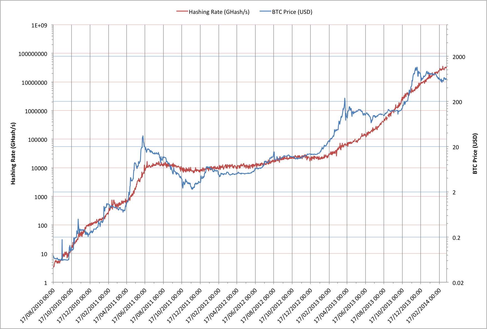

Dave Hudsonhashingit.com |
Which comes first: The miners or the money? Much as the old question of “Which came first: The chicken or the egg?” there appears to have been a lot of debate about whether the price of Bitcoins is a result of mining activity or whether mining activity is the result of the price of Bitcoins.
The generally-held belief is that as the value of Bitcoins has increased there has been more interest in Bitcoins and this has in turn driven miners to mine, but is it really this simple?
Let’s look at a chart comparing the value of Bitcoin in US Dollars vs the global hashrate in GHash/s and see if we can make any sense of this?

This chart is plotted on two logarithmic axis but they’re not on the same scale. The price trace increases by approximately a factor of a thousand but the hashing traces increases by approximately a factor of ten million. Essentially this means that the hashing rate has increased 56 times faster than the price. There’s nothing particularly significant about the ratios other than that they let us watch the two traces relative to each other.
We can see something a little curious here though. The hashing rate does indeed speed up as the price of a Bitcoin increases and the rate slows once the price starts to fall but it’s almost as if the hashing rate has been acting as an anchor for the price. If we think about the hardware that has been used for hashing, however, there’s an interesting pattern.
In 2010 and the first half of 2011 miners could rapidly bring new hardware on-stream in the form of CPUs and then GPUs. In many cases these were already available and so mining profitability didn’t really have to account for the hardware costs and people would want CPUs and fast GPUs anyway.
From mid 2011 to early 2013 the initial euphoria waned, yet that seems a little strange for something that had seen such rapid growth only a short while earlier. There were the strange periodic spikes in the Bitcoin price every 7-ish months but neither the price nor the hashing rate really changed that much. Roll forward to early 2013 though and things suddenly changed - a lot.
In early 2013 Bitcoin mining ASICs started to take over the hashing activity. Unlike previous generations that used CPUs and GPUs that were intrinsically useful for other purposes the ASICs weren’t; they weren’t cheap either! Suddenly a lot of Bitcoin miners were having to pay a lot of money to mine Bitcoins but curiously the price started to go up just as the ASICs started to become available. Even more curiously, the ASICs had long lead times so miners had made a financial commitment to mining months in advance of their mining hardware being available. Was it just “good luck” that the Bitcoin price suddenly surged, and then surged again, or was the price increase simply reflecting that a lot of money had been spent to go mining?
It seems quite possible that at least part of the reason for the surges in the Bitcoin price is a result of the miners investing in mining. The price increases have encouraged more miners too and that means more money spent on mining by those new miners. This really does feel like a “chicken and egg” problem. A bigger question, however, is what happens when the number of miners is large and the technology roadmap eventually limits the ability to increase the hash rate? At that point there will need to be some other driver for any other price increases.
Data for this article was sourced via blockchain.info